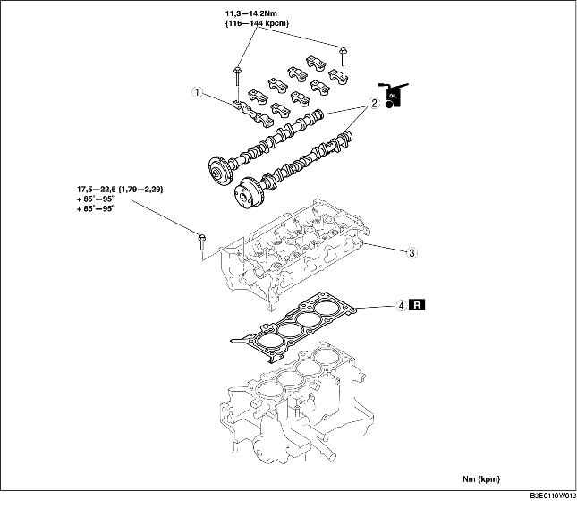

BYTE AV TOPPLOCKSPACKNING [ZJ, Z6]
B3E011010271W01
-
Varni ng
-
• Bränsleånga är mycket farligt. Den är mycket lättantändlig och kan orsaka svåra skador och olyckor. Håll alltid gnistor och öppna lågor borta från bränslet.
-
• Bränsleläckage och bränslespill är mycket farligt. Bränslet kan antändas och orsaka svåra skador och olyckor eller till och med dödsfall. Bränsle kan dessutom irritera hud och ögon. För att förhindra detta, följ alltid anvisningarna under 'Säkerhetsföreskrifter för bränslesystemet'. (Se FÖRSIKTIGHETSÅTGÄRDER FÖRE SERVICE [ZJ, Z6, LF].)
1. Demontera följande delar:
-
(1) Kamkedja (Se DEMONTERING/MONTERING AV KAMKEDJA [ZJ, Z6].)
-
(2) EGR-rör och EGR-ventilens fäste (Se DEMONTERING/INSTALLATION AV INSUGSLUFTSYSTEM [ZJ, Z6].) (Se DEMONTERING/MONTERING AV AVGASSYSTEMET [ZJ, Z6].) (Se DEMONTERING/MONTERING AV EGR-VENTIL [ZJ, Z6].)
-
(3) Främre syresond (HO2S) (Se DEMONTERING/MONTERING AV AVGASSYSTEMET [ZJ, Z6].)
-
(4) Gasvajer och gasvajerkonsol
-
(5) Bränsleslang och kablage till bränsleinsprutare (Se DEMONTERING/MONTERING AV SNABBKOPPLING [ZJ, Z6, LF].) (Se DEMONTERING/MONTERING AV BRÄNSLEINSPRUTARE [ZJ, Z6].)
-
(6) Luftslang, gasspjällhus och insugningsrör (Se DEMONTERING/INSTALLATION AV INSUGSLUFTSYSTEM [ZJ, Z6].)
2. Koppla ur följande delar:
-
(1) Bakre syresond (HO2S)
-
(2) Huvudljuddämpare (Se DEMONTERING/MONTERING AV AVGASSYSTEMET [ZJ, Z6].)
-
(3) WU-TWC (Se DEMONTERING/MONTERING AV AVGASSYSTEMET [ZJ, Z6].)
-
(4) Övre kylarslang
-
(5) Värmarslang
3. Demontera i den ordning som anges i tabellen.
4. Montera i omvänd ordning mot demonteringen.
5. Gör ett kompressionsprov. (Se KONTROLL AV MOTORKOMPRESSIONEN [ZJ, Z6].)

|
1
|
Kamaxelöverfall
|
|
2
|
Kamaxel
|
|
3
|
Topplock
|
|
4
|
Topplockspackning
|
Observera vid demontering av kamaxelns lageröverfall
1. Lossa kamaxelns lageröverfallsbultar i 2-3 steg, i den ordning som visas.
2. Ta loss kamaxelöverfallen.
Observera vid demontering av topplocket
1. Lossa topplocksbultarna i 2-3 steg, i den ordning som visas i figuren, och demontera dem.
Observera vid montering av topplocket
1. Mät längden på alla topplocksskruvar.
-
• Byt ut dem om de är för långa.
-
Standard
-
L: 128,9-129,5 mm {5,075-5,098 in}
-
Maximum
-
L:130,2 mm {5,125 in}
2. Dra åt topplocksskruvarna i tre steg i den ordning som figuren visar.
-
1. Åtdragningsmoment: 17,5-22,5 Nm {1,79-2,29 kpm, 13,0-16,5 ft·lbf}
-
2. Åtdragningsvinkel: 85°-95°
-
3. Åtdragningsvinkel: 85°-95°
Observera vid montering av kamaxelöverfall
1. Rikta in kamaxelpositionen på cylinder 1 till övre dödläge och montera kamaxeln.
2. Montera kamaxelöverfallen på de numrerade positionerna i figuren, och dra sedan tillfälligt åt kamaxelöverfallens bultar (nr 2 och 7).
3. Lossa kamaxelns lageröverfallsbultar i 2-3 steg, enhetligt i den ordning som visas.
-
Åtdragningsmoment
-
11,3-14,2 Nm {116-144 kpcm, 101-125 in·lbf}